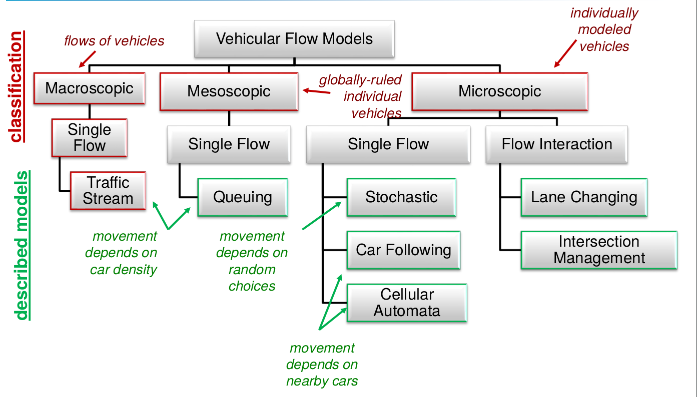
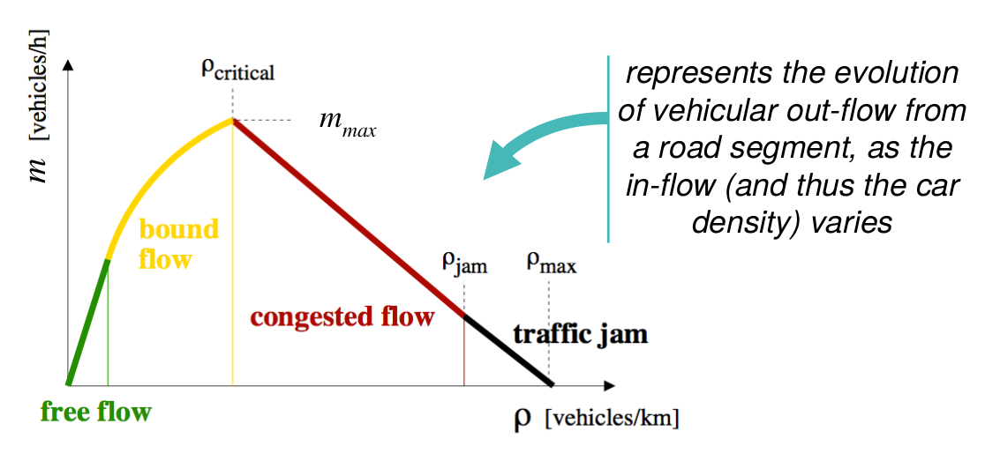
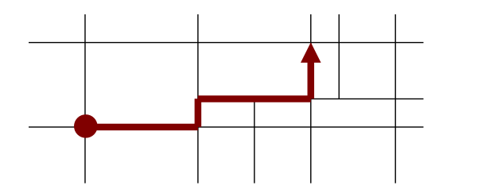

The key principle in flow modeling is to treat the vehicles as a liquid flowing through sections. We then put some numbers to this and get the car-following models. The major classification of the Vehicular Flow Models is shown below:

The models are fundamentally differentiated on the basis of the level of precision that they go into, which is inversely related to the cost of modeling, and this gives us the 3 categories:
Macroscopic: Here, we model vehicle traffic as a flow as a segment of the road, and thus, our fluid is the cars entering/exiting that segment and the density of the number of cars in that segment. All the cars in this segment will have the same speed. Thus, we can have the relationship :
flow=speed×density
Microscopic: Here, we measure the position of each vehicle and have the speed of each vehicle as different. Thus, we have individual entities with aggregated models.
Mesoscopic: This is a hybrid between the above two, where we get to keep the individual speeds of vehicles and yet analyze flows. Thus, we can say stuff like while all vehicles will have the same speed in a section, we can still control individual vehicles. This also allows us to look into mixed flows.
In this model, we directly model the traffic as a fluid. Thus, we take the flow m, the density ρ and the speed v over a segment [x,Δx] and apply the fluid lagrangian equation to it to get
m(x,t)=ρ(x,t)v(x,t)∂t∂ρ(x,t)+∂x∂m(x,t)=0
These are the basic constraints that tell us that the flow in this section is conserved and any discrepancy is happening due to friction or heat, which can be modeled as abrupt changes and leaving cars respectively. However, we have two equations and 3 unknowns, and so for the vehicular model we impose the third condition which says that the speed and density are related
v(x,t)=f(ρ(x,t))
This relation is intuitive since the more density we have, the slower is the speed. Now, the way we model this speed function determines how we solve the problem and this is what gets us to apply this model.
The solution of macroscopic models results in the fundamental diagram, which is something that is common in macroscopic and mesoscopic models.

The diagram above is called the flow-density diagram. It accurately represents a highway phenomenon. Initially, we have a free highway and so, the more vehicles we add to this, the more is the speed of the vehicles until a certain point at which there are enough cars so that each car cannot move as fast as it wants. This is the region on bounded flow where the speeds of the cars are correlated. This happens till a maximum density that gives us a positive flow ρcritical after which we cannot add any more vehicles to the road without reducing the flow. Thus, our ideal is to stay at this density and try to play around this value. if w go beyond this flow, the speed goes down according to the strong correlation between vehicle speeds. This downward curve depends on the region in which we are. If we are on a highway, it is easier to have a straight line than in an urban environment. This result happens till a certain point after which we enter a traffic jam. This density is the ρjam and is the starting of the region of traffic jam. In this region, the cars may be moving very slow till a density called ρmax at which the cars halt.
This model is initially a macroscopic model since the whole model is characterized by macroscopic quantities, but to be able to implement this in a simulator, we need to discretize it. thus, we end up with individually modeled vehicles, but they all move according to macroscopic quantities i.e all vehicles traveling on the same road segment will have identical speed/acceleration.
Now, each vehicle has its own speed and we can have a lot of interesting things in this like leader-follower models, overtaking, etc., which is either not possible in macroscopic models, or is too complicated to model. All the three kinds of models are used for different kinds of applications:
For traffic safety, we need fine granularity of vehicle representation since the communication range is short. Thus, we use Microscopic Models
For Navigation, we need to have a notikn of large scal mobiltiy and Aggregated Metrics like average spped and time. Moreover, we need the capability of re-routing, and the precise position may not be that useful. Thus, while we can apply bot microscopic and mesoscopic models, the mesoscopic models are preferred
For Traffic monitoring, we just need a notion of aggregated metrics on a very large scale and need to see stuff like how the whole bunch of cars are populating a highwar. Thus, we need macroscopic modelling
This is an example of a stochastic model where we apply RWP on a graph.

The movement of each vehicle is structures in trips, and we choose the spped as
vi=vmin+η(vmax−vmin)
Where vmin,vmax are the bounds on speed and η∈[0,1] is a random variable. The key aspect is tuning this η to get a good speed estimate. An example of this being applied to urban scenarios is called Urban CSM where we represent roads on a city as nodes and edges and we can set vmax depending on the speed limits on the road. We can add optimizations to this, like uniformly sampling speed around max:
In these models we follow the leader-follower approach. Thus, the speed of a car depennds on the cars nearby and on an absolute relative speed of surrounding vehicles.. In orther words, the movemet of each vehicle is strongly correlated with other vehicles.
The objective of this model is to represent the interaction between two vehicles in the most realistic way. Interaction in microscopic models means either acceleration or speed. The idea is that our car should accelerate based on its current speed and its vicinity, and this is modeled as follows :
The resulting acceleration depends on the maximum acceleration (a), the ratio of the current speed to the maximum speed vmaxvi(t), and the ratio of the desired inter-distance between the car ad the bumper-to-bumper distance Δxi(t)Δxdex(t) as follows:
The desired inter-distance between the cars, in turn, depends on a safe distance, a safety headway time, the current velocity and the maximum acceleration (a) and deceleration (b
The major idea here is that the desired distance between the car should at-least be a safety distance Δxsafe and then to this safety distance we add a headway distance calculated by multiplying the headway time Δtsafe, which is the elapsed time between the front of the lead vehicle passing a point on the roadway and the front of the following vehicle passing the same point and is usually something like 2 seconds, with the current velocity. This means that we are essentially adding a leeway to the minimal safety distance by seeing how fast we are moving and multiplying it by the headway time. Thus, if these two were the only factors in consideration, then we would have a model where when our car is at rest, Δxsafe is the desired distance and in case our car is moving, then we add a velocity-based factor to it to take into account how fast the car is moving. We also subtract the minimal distance by 2abvi(t)Δvi(t) to account for the difference in the velocity of the car and the next car and normalize it by the breaking capability 2ab. This factor takes into account the relative speeds w.r.t to the car model the driver adapting to the difference in speeds.